Background
Researchers are studying the impact of protein sources and protein levels in the diet on the weight of rats. They feed the rats with diets of beef, cereal and pork and use a low and high protein level for each diet type. The researchers can include 60 rats in the experiment. Prior to the experiment, the rats were divided in 10 homogeneous groups of 6 rats based on characteristics such as initial weight, appetite, etc.
Within each group a rat is randomly assigned to a diet. The rats are fed during a month and the weight gain in grams is recorded for each rat.
The researchers want to assess the effect of the type of diet and the protein level on the weight of the rats.
In this exercise we will perform the data exploration using all diets, but, to keep the data analysis simple we will only assess the beef and cereal diets.
Data exploration
- Boxplot of the weight gain against protein source, protein level with coloring according to block
diet %>%
ggplot(aes(x=protLevel, y=weightGain)) +
scale_fill_brewer(palette="RdGy") +
theme_bw() +
geom_boxplot(outlier.shape=NA) +
geom_jitter(aes(color=block)) +
ggtitle("Weight gain dependence on protein source") +
ylab("Weigth gain (g)") +
#stat_summary(fun = mean, geom="point", shape=5, size=3, color="black", fill="black") +
facet_wrap(.~protSource)
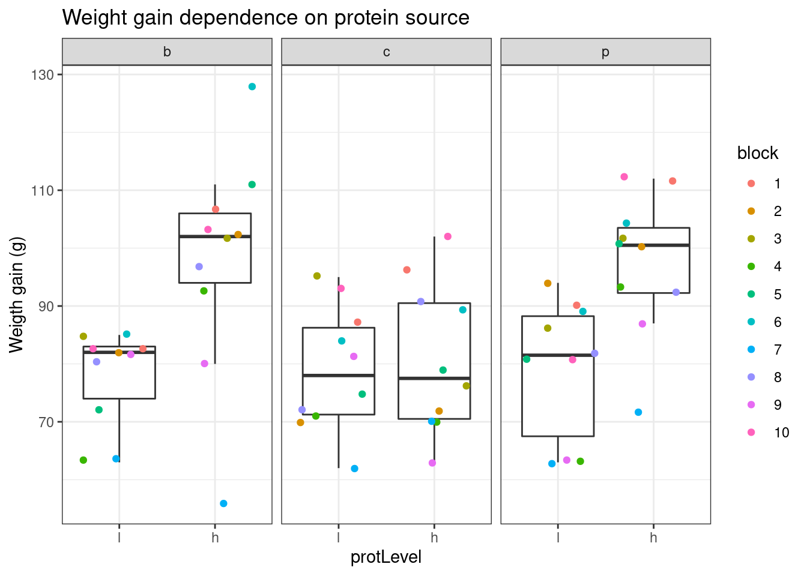
- Lineplot of the weight gain against protein source, protein level with coloring and grouping according to block
diet %>%
ggplot(aes(x=protSource:protLevel, y=weightGain)) +
scale_fill_brewer(palette="RdGy") +
theme_bw() +
geom_line(aes(group=block, color=block)) +
geom_point(aes(color=block))+
ggtitle("Weight gain dependence on protein source") +
ylab("Weigth gain (g)")
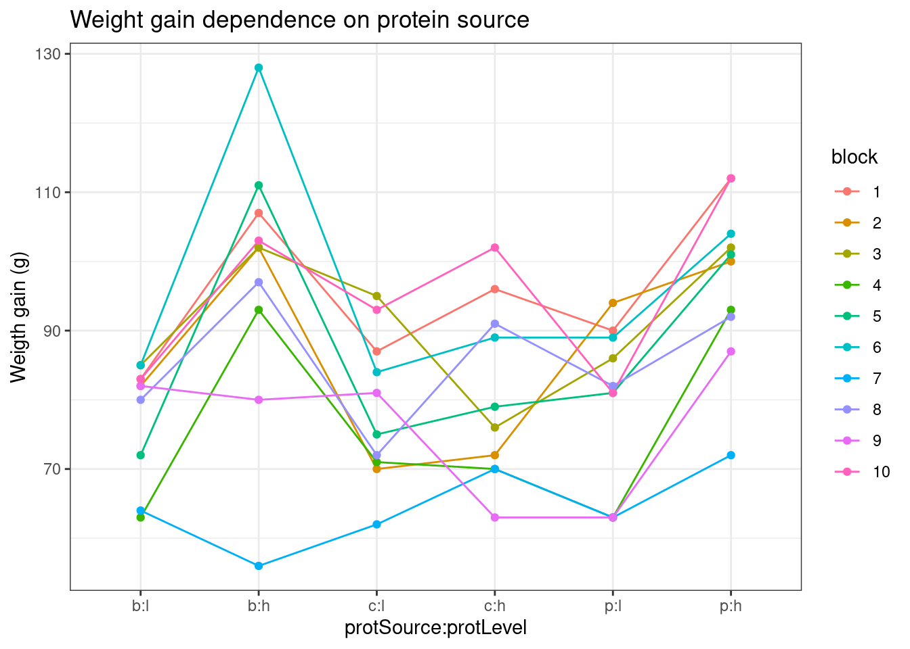
#stat_summary(fun = mean, geom="point", shape=5, size=3, color="black", fill="black")
An increase in the weight of the rats seems to depend on the protein source received in the diet.
The increase in the weight of the rats seems to depend on the level of protein received in the diet
There also seems to be an interaction effect between the protein level and the protein source on the gain in weight of the rats. For the beef and the pork diets the effect of high protein levels in the data seems to be much stronger than in the cereal diet.
There is also a strong effect of the block. Blocking implies a randomisation restriction, hence, we will have to include the block effect anyway.
Multivariate linear regression analysis
Assumptions
List assumptions:
- The observations are independent
- Linearity between the response and predictor variable
- The residuals of the model must be normally distributed
- Homoscedasticity of the data
The first assumption is met if we correct for block in the model because the rats were randomized to the treatment within block. The other three assumptions can be assessed by fitting the linear model and calling the plot() function as follows.
lm1 <- lm(weightGain ~ block + protSource*protLevel, data=diet.bc)
plot(lm1)
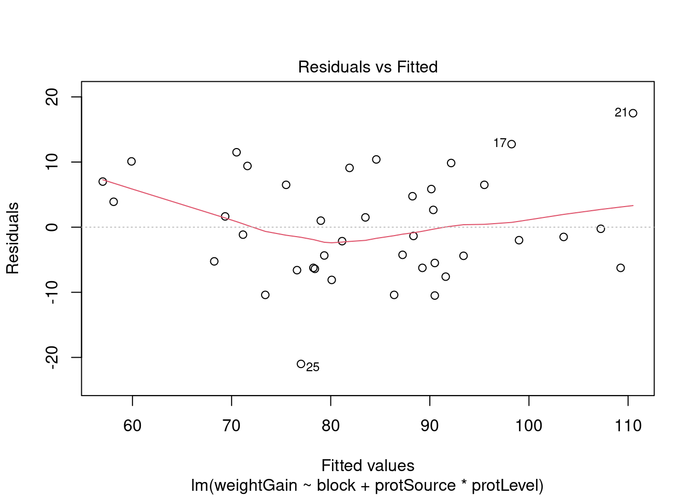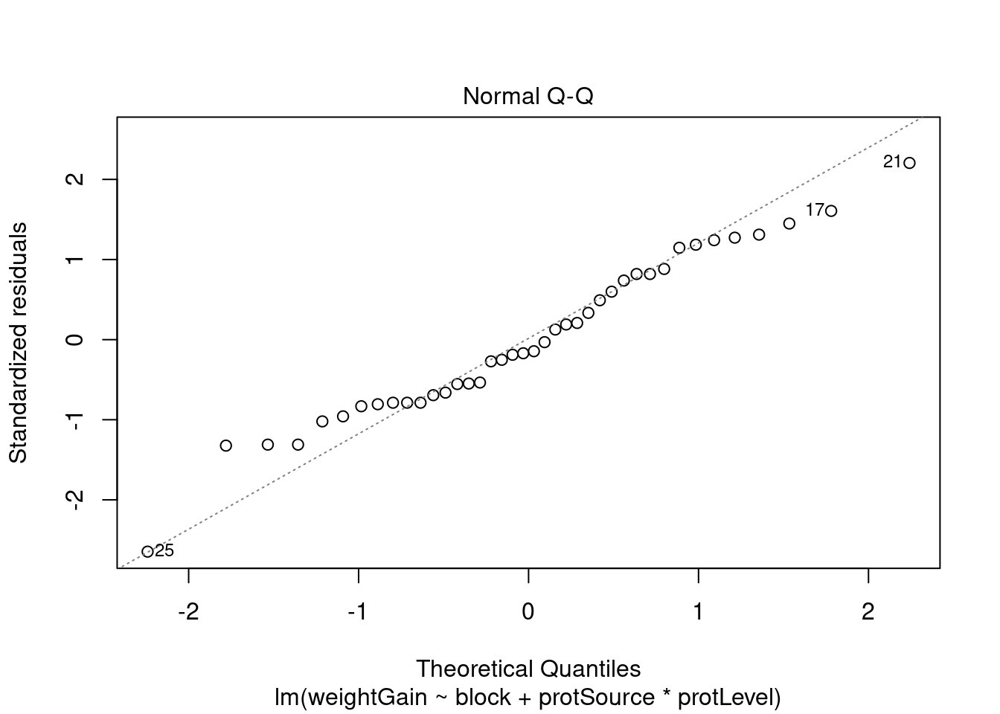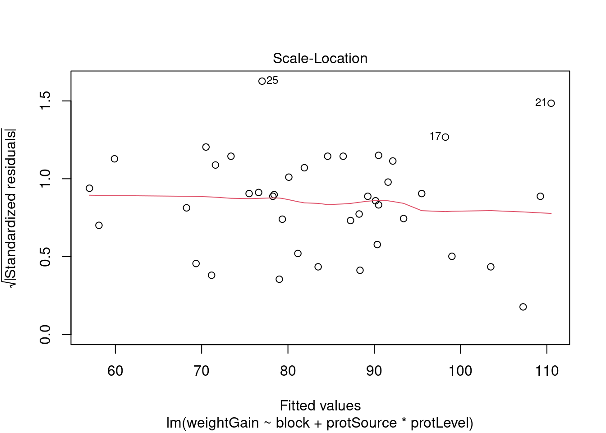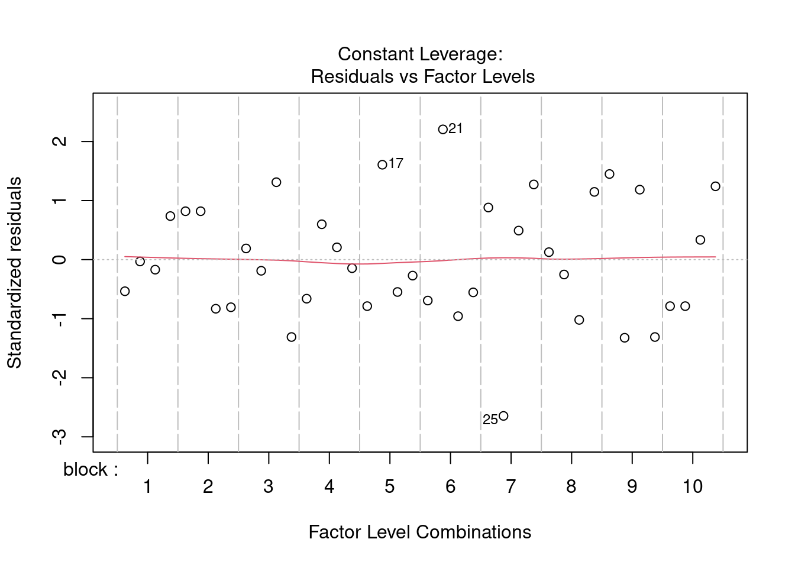
All assumptions are met for this dataset.
Hypothesis testing
We here fit a linear model with a blocking factor for block and main and interaction effects for protein source and protein level.
##
## Call:
## lm(formula = weightGain ~ block + protSource * protLevel, data = diet.bc)
##
## Residuals:
## Min 1Q Median 3Q Max
## -21.00 -6.25 -1.25 6.50 17.50
##
## Coefficients:
## Estimate Std. Error t value Pr(>|t|)
## (Intercept) 87.250 5.506 15.846 3.39e-15 ***
## block2 -11.750 6.830 -1.720 0.096797 .
## block3 -3.750 6.830 -0.549 0.587467
## block4 -19.000 6.830 -2.782 0.009735 **
## block5 -9.000 6.830 -1.318 0.198650
## block6 3.250 6.830 0.476 0.637999
## block7 -30.250 6.830 -4.429 0.000141 ***
## block8 -8.250 6.830 -1.208 0.237536
## block9 -16.750 6.830 -2.453 0.020933 *
## block10 2.000 6.830 0.293 0.771883
## protSourcec 1.100 4.319 0.255 0.800914
## protLevelh 20.000 4.319 4.630 8.23e-05 ***
## protSourcec:protLevelh -18.200 6.109 -2.979 0.006043 **
## ---
## Signif. codes: 0 '***' 0.001 '**' 0.01 '*' 0.05 '.' 0.1 ' ' 1
##
## Residual standard error: 9.659 on 27 degrees of freedom
## Multiple R-squared: 0.7252, Adjusted R-squared: 0.6031
## F-statistic: 5.939 on 12 and 27 DF, p-value: 6.122e-05
Interpretation of the regression parameters
library(ExploreModelMatrix)
ExploreModelMatrix::VisualizeDesign(diet.bc, ~ block + protSource * protLevel)$plotlist
## $`block = 1`
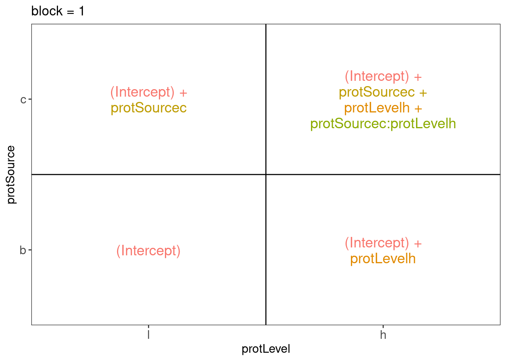
##
## $`block = 10`
##
## $`block = 2`
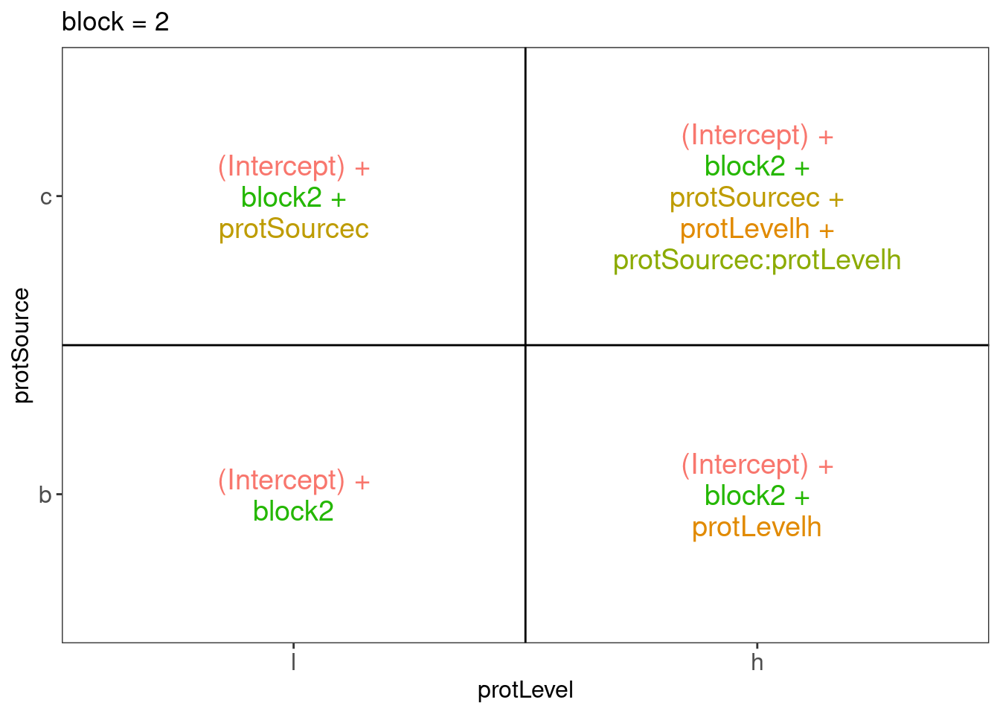
##
## $`block = 3`
##
## $`block = 4`
##
## $`block = 5`
##
## $`block = 6`
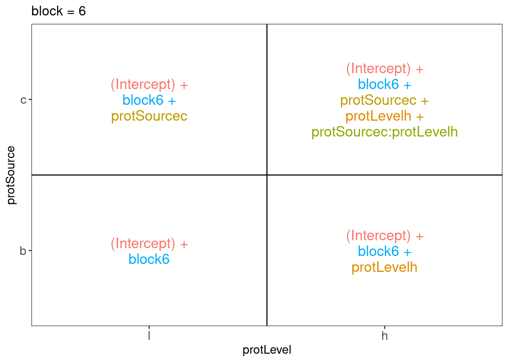
##
## $`block = 7`
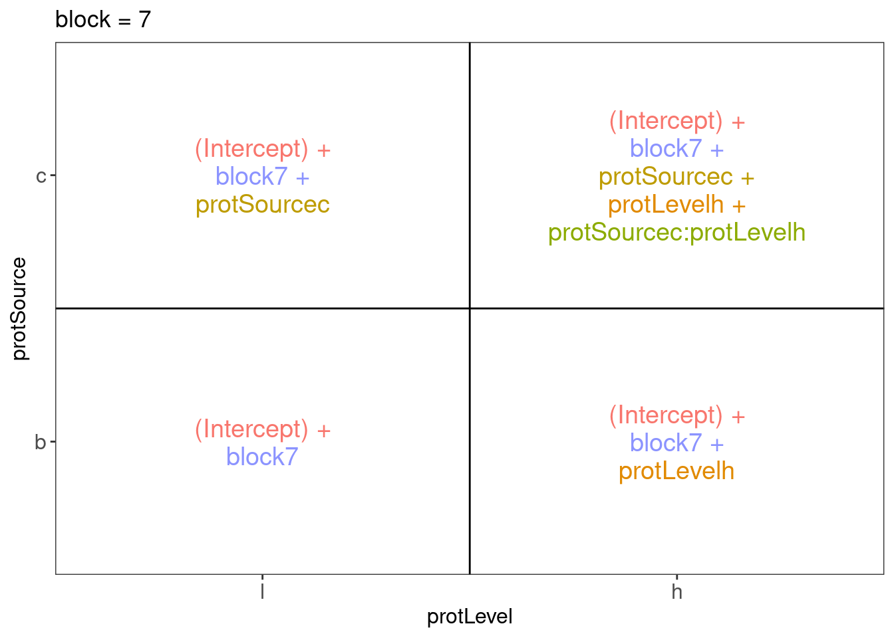
##
## $`block = 8`
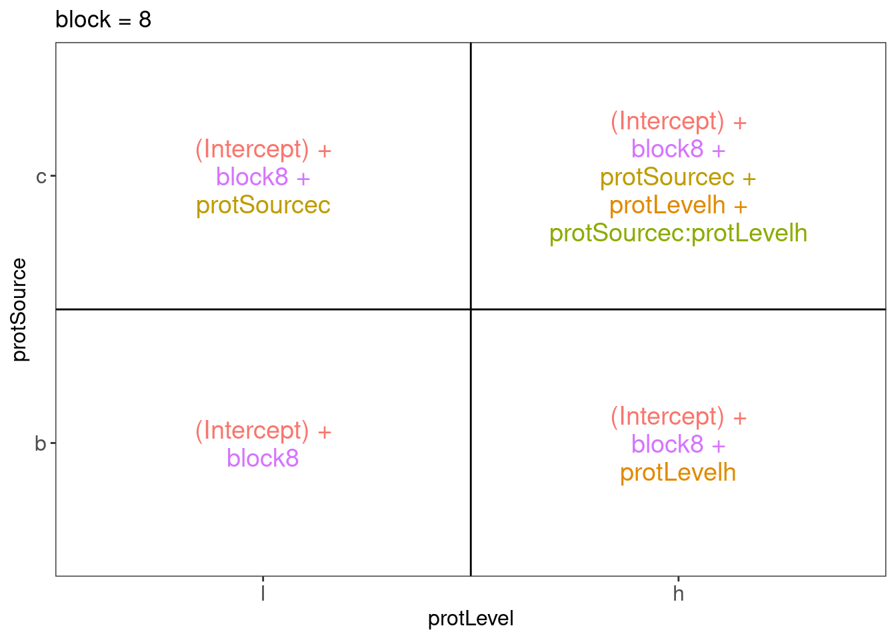
##
## $`block = 9`
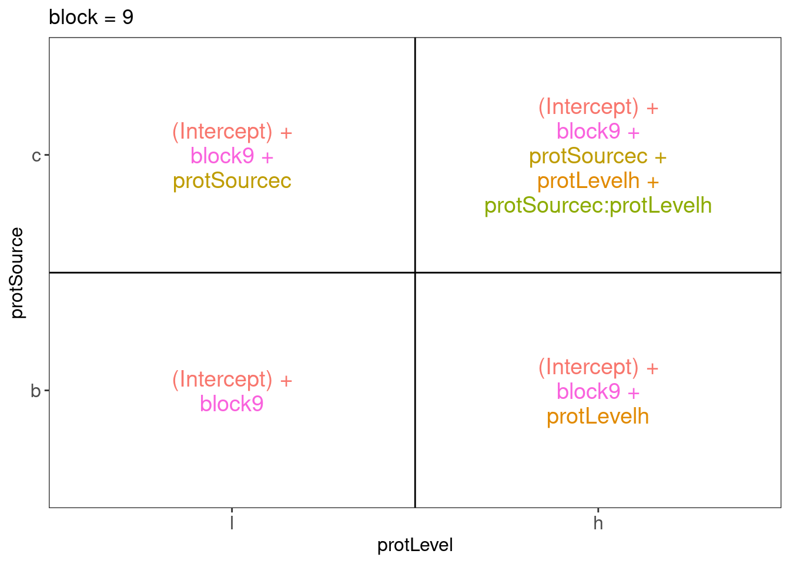
There are 3 levels for protein source, 2 levels for protein level and 10 levels for the blocking variable. We will have one reference level for each respective variable: beef, low, block 1. So we need 2, 1 and 9 dummy variables to introduce the factors protein source, protein level and block in the linear model, respectively.
Hence, we can write down the linear model as follows:
\(y_i=\beta_0+\beta_cx_{i,c} +\beta_hx_{i,h}+\beta_{ch}x_{i,c}x_{i,h}+\beta_{b2}x_{i,b2}+\ldots+\beta_{b10}x_{i,b10}+\epsilon_{i}\)
with: \(y_i\) the observed weight gain for rat i, \(x_{i,h}\) a dummy variable which is 1 if rat i receives a high protein diet and is 0 otherwise,
\(x_{i,c}\) a dummy variable which is 1 if rat i receives a cereal diet and is 0 otherwise,
\(x_{i,bk}\) is a dummy variable which is 1 if rat i belongs to block \(bk\) and is 0 otherwise, with \(k \in 2,\ldots, 10\), and \(\epsilon_i\) an error term which is normally distributed with mean 0 and variance \(\sigma^2\), i.e. \(\epsilon_i \sim N(0,\sigma^2)\).
Rats that are assigned to block \(k\) and receive a beef based low protein diet have a covariate pattern \(x_{i,h}=0\), \(x_{i,c}=0\), \(x_{i,bm}=0\) with \(m\neq k\) and \(x_{i,bk}=1\). Their mean weight gain is thus equal to \(\mu_{l,b,bk}=\beta_0+\beta_{bk}\)
Rats that are assigned to block \(k\) and receive a beef based high protein diet have a covariate pattern \(x_{i,h}=1\), \(x_{i,c}=0\), \(x_{i,bm}=0\) with \(m\neq k\) and \(x_{i,bk}=1\). Their mean weight gain is thus equal to \(\mu_{h,b,bk}=\beta_0+\beta_h+\beta_{bk}\)
Rats that are assigned to block \(k\) and receive a cereal based low protein diet have a covariate pattern \(x_{i,h}=0\), \(x_{i,c}=1\), \(x_{i,bm}=0\) with \(m\neq k\) and \(x_{i,bk}=1\). Their mean weight gain is thus equal to \(\mu_{h,c,bk}=\beta_0+\beta_c+\beta_{bk}\)
Rats that are assigned to block \(k\) and receive a cereal based heigh protein diet have a covariate pattern \(x_{i,h}=1\), \(x_{i,c}=1\) \(x_{i,bm}=0\) with \(m\neq k\) and \(x_{i,bk}=1\). Their mean weight gain is thus equal to \(\mu_{h,c,bk}=\beta_0+\beta_h+\beta_c+\beta_{ch}+\beta_{bk}\)
We can now relate this to the output of the lm function:
The intercept \(\beta_0\) is thus the average weight gain in the low beef diet for rats in block 1.
The parameter \(\beta_c\): the average weight gain difference between cereal-low and beef-low diet is 1.1g.
The parameter \(\beta_h\): the average weight gain difference between beef-high and beef-Low diet is 20g.
The parameter \(\beta_{ch}\) is the difference in the average weight gain difference due to the high protein level as compared to the low protein level for cereal diets as compared to the weight gain difference that occurs due to the protein level in the reference class (here beef diet). Here this is negative, i.e. -18.2g, thus the weight gain for the cereal protein source increases on average less between high and low protein diets than in beef based diets.
Testing the overall (combined) effect of diet
Because there are multiple factors with different levels in the model, we can first assess the effect of the diet (protein Level, protein source and the interaction) by using anova. With this test we will assess the null hypothesis that the average weight gain in each treatment is equal: i.e. \(H_0: \mu_{b,l}=\mu_{b,h}=\mu_{c,h}=\mu_{c,l}\) versus the alternative hyptohesis \(H_1:\) that at least two treatment means are different.
lm0 <- lm(weightGain ~ block, data=diet.bc)
anova(lm0, lm1)
We can conclude that there is an very significant effect of the diet type (protein source and/or protein level and/or protein source-protein level interaction) on the weight gain of rats (p = 2e-04).
Assessing the interaction effect between protein source and protein level
library(car)
summary(lm1)
##
## Call:
## lm(formula = weightGain ~ block + protSource * protLevel, data = diet.bc)
##
## Residuals:
## Min 1Q Median 3Q Max
## -21.00 -6.25 -1.25 6.50 17.50
##
## Coefficients:
## Estimate Std. Error t value Pr(>|t|)
## (Intercept) 87.250 5.506 15.846 3.39e-15 ***
## block2 -11.750 6.830 -1.720 0.096797 .
## block3 -3.750 6.830 -0.549 0.587467
## block4 -19.000 6.830 -2.782 0.009735 **
## block5 -9.000 6.830 -1.318 0.198650
## block6 3.250 6.830 0.476 0.637999
## block7 -30.250 6.830 -4.429 0.000141 ***
## block8 -8.250 6.830 -1.208 0.237536
## block9 -16.750 6.830 -2.453 0.020933 *
## block10 2.000 6.830 0.293 0.771883
## protSourcec 1.100 4.319 0.255 0.800914
## protLevelh 20.000 4.319 4.630 8.23e-05 ***
## protSourcec:protLevelh -18.200 6.109 -2.979 0.006043 **
## ---
## Signif. codes: 0 '***' 0.001 '**' 0.01 '*' 0.05 '.' 0.1 ' ' 1
##
## Residual standard error: 9.659 on 27 degrees of freedom
## Multiple R-squared: 0.7252, Adjusted R-squared: 0.6031
## F-statistic: 5.939 on 12 and 27 DF, p-value: 6.122e-05
There is a very significant interaction between the protein source and the protein level. This indicates that the average weight increase due to the protein level differs according to the protein source. Hence, we cannot assess the effect of the protein source and/or protein level independently because there effects of the protein source vary according to the protein level.
Assessing specific contrasts
Imagine that we are interested in assessing if there is an effect of
protein source in the low protein diets
- \(\mu_{c,l}-\mu_{b,l} = \beta_c\)
protein source in high protein diets
- \(\mu_{c,h}-\mu_{b,h}=\beta_c+\beta_{ch}\)
protein level for beef diets (\(\mu_{b,h}-\mu_{b,l}=\beta_h\)), and cereal diets (\(\mu_{c,h}-\mu_{c,l}=\beta_h+\beta_{ch}\))
if the effect of the protein level differs between
- beef and cereal \((\mu_{c,h}-\mu_{c,l}) - (\mu_{b,h}-\mu_{b,l})=\beta_{ch}\)
These effects of interest are so-called contrasts, i.e. linear combinations of the parameters.
We can define the contrasts and assess the significance of the contrasts with the code below. The contrasts are given as input in the form of symbolic descriptions to the linfct argument of the glht function.
library(multcomp)
set.seed(75468) # to get reproducible results (small effect if removed)
lm1MultComp <- glht(
model = lm1,
linfct = c("protSourcec = 0",
"protSourcec + protSourcec:protLevelh = 0",
"protLevelh = 0",
"protLevelh + protSourcec:protLevelh = 0",
"protSourcec:protLevelh = 0")
)
##
## Simultaneous Tests for General Linear Hypotheses
##
## Fit: lm(formula = weightGain ~ block + protSource * protLevel, data = diet.bc)
##
## Linear Hypotheses:
## Estimate Std. Error t value Pr(>|t|)
## protSourcec == 0 1.100 4.319 0.255 0.99235
## protSourcec + protSourcec:protLevelh == 0 -17.100 4.319 -3.959 0.00211
## protLevelh == 0 20.000 4.319 4.630 < 0.001
## protLevelh + protSourcec:protLevelh == 0 1.800 4.319 0.417 0.96838
## protSourcec:protLevelh == 0 -18.200 6.109 -2.979 0.02351
##
## protSourcec == 0
## protSourcec + protSourcec:protLevelh == 0 **
## protLevelh == 0 ***
## protLevelh + protSourcec:protLevelh == 0
## protSourcec:protLevelh == 0 *
## ---
## Signif. codes: 0 '***' 0.001 '**' 0.01 '*' 0.05 '.' 0.1 ' ' 1
## (Adjusted p values reported -- single-step method)
##
## Simultaneous Confidence Intervals
##
## Fit: lm(formula = weightGain ~ block + protSource * protLevel, data = diet.bc)
##
## Quantile = 2.6386
## 95% family-wise confidence level
##
##
## Linear Hypotheses:
## Estimate lwr upr
## protSourcec == 0 1.1000 -10.2975 12.4975
## protSourcec + protSourcec:protLevelh == 0 -17.1000 -28.4975 -5.7025
## protLevelh == 0 20.0000 8.6025 31.3975
## protLevelh + protSourcec:protLevelh == 0 1.8000 -9.5975 13.1975
## protSourcec:protLevelh == 0 -18.2000 -34.3185 -2.0815
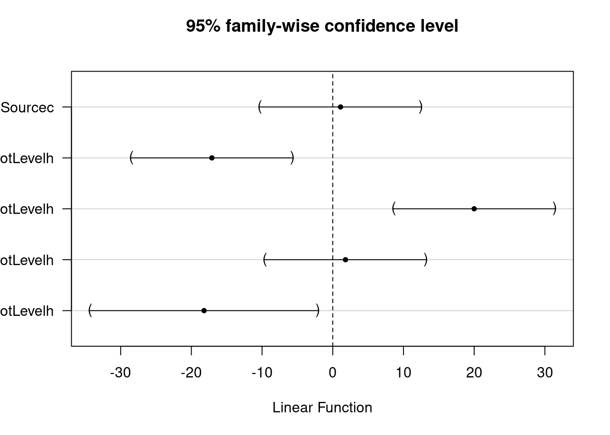
Note that the p-values and the confidence intervals are automatically corrected for multiple testing.
LS0tCnRpdGxlOiAiRXhlcmNpc2UgOC41OiBCbG9ja2luZyBvbiB0aGUgcmF0IGRpZXQgZGF0YXNldCAtIHNvbHV0aW9uIiAgIAphdXRob3I6ICJMaWV2ZW4gQ2xlbWVudCBhbmQgSmVyb2VuIEdpbGlzIgpkYXRlOiAic3RhdE9taWNzLCBHaGVudCBVbml2ZXJzaXR5IChodHRwczovL3N0YXRvbWljcy5naXRodWIuaW8pIiAgCm91dHB1dDoKICAgIGh0bWxfZG9jdW1lbnQ6CiAgICAgIGNvZGVfZG93bmxvYWQ6IHRydWUgICAgCiAgICAgIHRoZW1lOiBjb3NtbwogICAgICB0b2M6IHRydWUKICAgICAgdG9jX2Zsb2F0OiB0cnVlCiAgICAgIGhpZ2hsaWdodDogdGFuZ28KICAgICAgbnVtYmVyX3NlY3Rpb25zOiB0cnVlCiAgICBwZGZfZG9jdW1lbnQ6CiAgICAgIHRvYzogdHJ1ZQogICAgICBudW1iZXJfc2VjdGlvbnM6IHRydWUKICAgICAgbGF0ZXhfZW5naW5lOiB4ZWxhdGV4Ci0tLQoKIyBCYWNrZ3JvdW5kIAoKUmVzZWFyY2hlcnMgYXJlIHN0dWR5aW5nIHRoZSBpbXBhY3Qgb2YgcHJvdGVpbiBzb3VyY2VzIGFuZCBwcm90ZWluIGxldmVscyBpbiAKdGhlIGRpZXQgb24gdGhlIHdlaWdodCBvZiByYXRzLiBUaGV5IGZlZWQgdGhlIHJhdHMgd2l0aCBkaWV0cyBvZiBiZWVmLCBjZXJlYWwgCmFuZCBwb3JrIGFuZCB1c2UgYSBsb3cgYW5kIGhpZ2ggcHJvdGVpbiBsZXZlbCBmb3IgZWFjaCBkaWV0IHR5cGUuIApUaGUgcmVzZWFyY2hlcnMgY2FuIGluY2x1ZGUgNjAgcmF0cyBpbiB0aGUgZXhwZXJpbWVudC4gUHJpb3IgdG8gdGhlIGV4cGVyaW1lbnQsCnRoZSByYXRzIHdlcmUgZGl2aWRlZCBpbiAxMCBob21vZ2VuZW91cyBncm91cHMgb2YgNiByYXRzIGJhc2VkIG9uIApjaGFyYWN0ZXJpc3RpY3Mgc3VjaCBhcyBpbml0aWFsIHdlaWdodCwgYXBwZXRpdGUsIGV0Yy4KCldpdGhpbiBlYWNoIGdyb3VwIGEgcmF0IGlzIHJhbmRvbWx5IGFzc2lnbmVkIHRvIGEgZGlldC4gVGhlIHJhdHMgYXJlIGZlZCBkdXJpbmcgCmEgbW9udGggYW5kIHRoZSB3ZWlnaHQgZ2FpbiBpbiBncmFtcyBpcyByZWNvcmRlZCBmb3IgZWFjaCByYXQuIAoKVGhlIHJlc2VhcmNoZXJzIHdhbnQgdG8gYXNzZXNzIHRoZSBlZmZlY3Qgb2YgdGhlIHR5cGUgb2YgZGlldCBhbmQgdGhlIHByb3RlaW4gCmxldmVsIG9uIHRoZSB3ZWlnaHQgb2YgdGhlIHJhdHMuIAoKSW4gdGhpcyBleGVyY2lzZSB3ZSB3aWxsIHBlcmZvcm0gdGhlIGRhdGEgZXhwbG9yYXRpb24gdXNpbmcgYWxsIGRpZXRzLCBidXQsIAp0byBrZWVwIHRoZSBkYXRhIGFuYWx5c2lzIHNpbXBsZSB3ZSB3aWxsIG9ubHkgYXNzZXNzIHRoZSBiZWVmIGFuZCBjZXJlYWwgZGlldHMuCgojIEV4cGVyaW1lbnRhbCBkZXNpZ24gCgotIFRoZXJlIGFyZSB0aHJlZSBleHBsYW5hdG9yeSB2YXJpYWJsZXMgaW4gdGhlIGV4cGVyaW1lbnQ6IHRoZSBmYWN0b3IgZGlldCB0eXBlCndpdGggdHdvIGxldmVscyAoYmVlZiBhbmQgY2VyZWFsKSwgZmFjdG9yIHByb3RlaW4gbGV2ZWwgd2l0aCBsZXZlbHMgCihsb3cgYW5kIGhpZ2gpIGFuZCBhIGdyb3VwIGJsb2NraW5nIGZhY3RvciB3aXRoIDEwIGxldmVscy4KCi0gVGhlcmUgYXJlIDYgdHJlYXRtZW50czogYmVlZi1oaWdoLCBjZXJlYWwtaGlnaCwgcG9yay1oaWdoLCBiZWVmLWxvdywgCmNlcmVhbC1sb3csIHBvcmstbG93IHByb3RlaW4uIAoKLSBUaGUgcmF0cyBhcmUgdGhlIGV4cGVyaW1lbnRhbCB1bml0cyAodGhlIHVuaXQgdG8gd2hpY2ggYSB0cmVhdG1lbnQgaXMgYXBwbGllZCk6IGluIHRoaXMgZGVzaWduLCB0aGVyZSBpcyBhIHJhbmRvbWlzYXRpb24gcmVzdHJpY3Rpb246IFdpdGhpbiBhIGJsb2NrLCBhIHJhdCBpcyByYW5kb21seSBhc3NpZ25lZCB0byBhIGRpZXQuCgotIFRoZSByYXRzIGFyZSB0aGUgb2JzZXJ2YXRpb25hbCB1bml0cyAodGhlIHVuaXQgb24gd2hpY2ggdGhlIHJlc3BvbnNlIGlzIG1lYXN1cmVkKTogVGhlIHdlaWdodCBpcyB3ZWlnaHRlZCBmb3IgZWFjaCByYXQuCgotIFRoZSB3ZWlnaHQgZ2FpbiBpcyB0aGUgcmVzcG9uc2UgdmFyaWFibGUuIAoKLSBUaGUgZXhwZXJpbWVudCBpcyBhIHJhbmRvbWl6ZWQgY29tcGxldGUgYmxvY2sgKFJDQikgZGVzaWduCgpMb2FkIGxpYnJhcmllcwoKYGBge3IsIG1lc3NhZ2U9RkFMU0UsIHdhcm5pbmc9RkFMU0V9CmxpYnJhcnkodGlkeXZlcnNlKQpgYGAKCiMgRGF0YSBpbXBvcnQKCmBgYHtyfQpkaWV0IDwtIHJlYWQudGFibGUoImh0dHBzOi8vcmF3LmdpdGh1YnVzZXJjb250ZW50LmNvbS9zdGF0T21pY3MvUFNMUzIxL2RhdGEvZGlldFJhdHMudHh0IiwKICAgICAgICAgICAgICAgICAgIGhlYWRlcj1UUlVFKQpoZWFkKGRpZXQpCmBgYAoKIyBUaWR5IGRhdGEKCmBgYHtyfQpkaWV0IDwtIGRpZXQgJT4lCiAgbXV0YXRlKGJsb2NrID0gYXMuZmFjdG9yKGJsb2NrKSwKICAgICAgICAgcHJvdFNvdXJjZSA9IGFzLmZhY3Rvcihwcm90U291cmNlKSwKICAgICAgICAgcHJvdExldmVsID0gYXMuZmFjdG9yKHByb3RMZXZlbCkpICU+JQogIG11dGF0ZShwcm90TGV2ZWwgPSBmY3RfcmVsZXZlbChwcm90TGV2ZWwsICJsIikpCmBgYAoKIyBEYXRhIGV4cGxvcmF0aW9uCgotIEJveHBsb3Qgb2YgdGhlIHdlaWdodCBnYWluIGFnYWluc3QgcHJvdGVpbiBzb3VyY2UsIHByb3RlaW4gbGV2ZWwgd2l0aCBjb2xvcmluZyBhY2NvcmRpbmcgdG8gYmxvY2sKCmBgYHtyfQpkaWV0ICU+JSAKICBnZ3Bsb3QoYWVzKHg9cHJvdExldmVsLCB5PXdlaWdodEdhaW4pKSArIAogICAgc2NhbGVfZmlsbF9icmV3ZXIocGFsZXR0ZT0iUmRHeSIpICsKICAgIHRoZW1lX2J3KCkgKwogICAgZ2VvbV9ib3hwbG90KG91dGxpZXIuc2hhcGU9TkEpICsgCiAgICBnZW9tX2ppdHRlcihhZXMoY29sb3I9YmxvY2spKSArCiAgICBnZ3RpdGxlKCJXZWlnaHQgZ2FpbiBkZXBlbmRlbmNlIG9uIHByb3RlaW4gc291cmNlIikgKwogICAgeWxhYigiV2VpZ3RoIGdhaW4gKGcpIikgKyAKICAgICNzdGF0X3N1bW1hcnkoZnVuID0gbWVhbiwgZ2VvbT0icG9pbnQiLCBzaGFwZT01LCBzaXplPTMsIGNvbG9yPSJibGFjayIsIGZpbGw9ImJsYWNrIikgKwogICAgZmFjZXRfd3JhcCgufnByb3RTb3VyY2UpCmBgYAoKLSBMaW5lcGxvdCBvZiB0aGUgd2VpZ2h0IGdhaW4gYWdhaW5zdCBwcm90ZWluIHNvdXJjZSwgcHJvdGVpbiBsZXZlbCB3aXRoIGNvbG9yaW5nIGFuZCBncm91cGluZyBhY2NvcmRpbmcgdG8gYmxvY2sKCmBgYHtyfQpkaWV0ICU+JSAKICBnZ3Bsb3QoYWVzKHg9cHJvdFNvdXJjZTpwcm90TGV2ZWwsIHk9d2VpZ2h0R2FpbikpICsgCiAgICBzY2FsZV9maWxsX2JyZXdlcihwYWxldHRlPSJSZEd5IikgKwogICAgdGhlbWVfYncoKSArCiAgICBnZW9tX2xpbmUoYWVzKGdyb3VwPWJsb2NrLCBjb2xvcj1ibG9jaykpICsKICAgIGdlb21fcG9pbnQoYWVzKGNvbG9yPWJsb2NrKSkrCiAgICBnZ3RpdGxlKCJXZWlnaHQgZ2FpbiBkZXBlbmRlbmNlIG9uIHByb3RlaW4gc291cmNlIikgKwogICAgeWxhYigiV2VpZ3RoIGdhaW4gKGcpIikgCiAgICAjc3RhdF9zdW1tYXJ5KGZ1biA9IG1lYW4sIGdlb209InBvaW50Iiwgc2hhcGU9NSwgc2l6ZT0zLCBjb2xvcj0iYmxhY2siLCBmaWxsPSJibGFjayIpCmBgYAoKLSBBbiBpbmNyZWFzZSBpbiB0aGUgd2VpZ2h0IG9mIHRoZSByYXRzIHNlZW1zIHRvIGRlcGVuZCBvbiB0aGUgcHJvdGVpbiBzb3VyY2UKcmVjZWl2ZWQgaW4gdGhlIGRpZXQuCgotIFRoZSBpbmNyZWFzZSBpbiB0aGUgd2VpZ2h0IG9mIHRoZSByYXRzIHNlZW1zIHRvIGRlcGVuZCBvbiB0aGUgbGV2ZWwgb2YgcHJvdGVpbgpyZWNlaXZlZCBpbiB0aGUgZGlldAoKLSBUaGVyZSBhbHNvIHNlZW1zIHRvIGJlIGFuIGludGVyYWN0aW9uIGVmZmVjdCBiZXR3ZWVuIHRoZSBwcm90ZWluIGxldmVsIGFuZCB0aGUKcHJvdGVpbiBzb3VyY2Ugb24gdGhlIGdhaW4gaW4gd2VpZ2h0IG9mIHRoZSByYXRzLiBGb3IgdGhlIGJlZWYgYW5kIHRoZSBwb3JrIApkaWV0cyB0aGUgZWZmZWN0IG9mIGhpZ2ggcHJvdGVpbiBsZXZlbHMgaW4gdGhlIGRhdGEgc2VlbXMgdG8gYmUgbXVjaCBzdHJvbmdlcgp0aGFuIGluIHRoZSBjZXJlYWwgZGlldC4KCi0gVGhlcmUgaXMgYWxzbyBhIHN0cm9uZyBlZmZlY3Qgb2YgdGhlIGJsb2NrLiBCbG9ja2luZyBpbXBsaWVzIGEgcmFuZG9taXNhdGlvbiAKcmVzdHJpY3Rpb24sIGhlbmNlLCB3ZSB3aWxsIGhhdmUgdG8gaW5jbHVkZSB0aGUgYmxvY2sgZWZmZWN0IGFueXdheS4gCgojIEZpbHRlciB0aGUgZGF0YSB0byBvbmx5IHVzZSB0aGUgYmVlZiBhbmQgY2VyZWFsIGRpZXQKCmBgYHtyfQpkaWV0LmJjIDwtIGRpZXQgJT4lIGZpbHRlcihwcm90U291cmNlICE9ICJwIikKYGBgCgojIE11bHRpdmFyaWF0ZSBsaW5lYXIgcmVncmVzc2lvbiBhbmFseXNpcwoKIyMgQXNzdW1wdGlvbnMgCgpMaXN0IGFzc3VtcHRpb25zOgoKMS4gVGhlIG9ic2VydmF0aW9ucyBhcmUgaW5kZXBlbmRlbnQgCjIuIExpbmVhcml0eSBiZXR3ZWVuIHRoZSByZXNwb25zZSBhbmQgcHJlZGljdG9yIHZhcmlhYmxlCjMuIFRoZSByZXNpZHVhbHMgb2YgdGhlIG1vZGVsIG11c3QgYmUgbm9ybWFsbHkgZGlzdHJpYnV0ZWQKNC4gSG9tb3NjZWRhc3RpY2l0eSBvZiB0aGUgZGF0YQoKVGhlIGZpcnN0IGFzc3VtcHRpb24gaXMgbWV0IGlmIHdlIGNvcnJlY3QgZm9yIGJsb2NrIGluIHRoZSBtb2RlbCBiZWNhdXNlIHRoZSAKcmF0cyB3ZXJlIHJhbmRvbWl6ZWQgdG8gdGhlIHRyZWF0bWVudCB3aXRoaW4gYmxvY2suIFRoZSBvdGhlciB0aHJlZSBhc3N1bXB0aW9ucyAKY2FuIGJlIGFzc2Vzc2VkIGJ5IGZpdHRpbmcgdGhlIGxpbmVhciBtb2RlbCBhbmQgY2FsbGluZyB0aGUgYHBsb3QoKWAgZnVuY3Rpb24gCmFzIGZvbGxvd3MuCgpgYGB7cn0KbG0xIDwtIGxtKHdlaWdodEdhaW4gfiBibG9jayArIHByb3RTb3VyY2UqcHJvdExldmVsLCBkYXRhPWRpZXQuYmMpCnBsb3QobG0xKQpgYGAKCkFsbCBhc3N1bXB0aW9ucyBhcmUgbWV0IGZvciB0aGlzIGRhdGFzZXQuCgojIyBIeXBvdGhlc2lzIHRlc3RpbmcKCldlIGhlcmUgZml0IGEgbGluZWFyIG1vZGVsIHdpdGggYSBibG9ja2luZyBmYWN0b3IgZm9yIGBibG9ja2AgYW5kIG1haW4gYW5kIAppbnRlcmFjdGlvbiBlZmZlY3RzIGZvciBwcm90ZWluIHNvdXJjZSBhbmQgcHJvdGVpbiBsZXZlbC4KCmBgYHtyfQpzdW1tYXJ5KGxtMSkKYGBgCgojIyBJbnRlcnByZXRhdGlvbiBvZiB0aGUgcmVncmVzc2lvbiBwYXJhbWV0ZXJzCgpgYGB7cn0KbGlicmFyeShFeHBsb3JlTW9kZWxNYXRyaXgpCkV4cGxvcmVNb2RlbE1hdHJpeDo6VmlzdWFsaXplRGVzaWduKGRpZXQuYmMsIH4gYmxvY2sgKyBwcm90U291cmNlICogcHJvdExldmVsKSRwbG90bGlzdApgYGAKClRoZXJlIGFyZSAzIGxldmVscyBmb3IgcHJvdGVpbiBzb3VyY2UsIDIgbGV2ZWxzIGZvciBwcm90ZWluIGxldmVsIGFuZCAxMCBsZXZlbHMKZm9yIHRoZSBibG9ja2luZyB2YXJpYWJsZS4gV2Ugd2lsbCBoYXZlIG9uZSByZWZlcmVuY2UgbGV2ZWwgZm9yIGVhY2ggcmVzcGVjdGl2ZSAKdmFyaWFibGU6IGJlZWYsIGxvdywgYmxvY2sgMS4gU28gd2UgbmVlZCAyLCAxIGFuZCA5IGR1bW15IHZhcmlhYmxlcyB0byBpbnRyb2R1Y2UgCnRoZSBmYWN0b3JzIHByb3RlaW4gc291cmNlLCBwcm90ZWluIGxldmVsIGFuZCBibG9jayBpbiB0aGUgbGluZWFyIG1vZGVsLCAKcmVzcGVjdGl2ZWx5LgoKSGVuY2UsIHdlIGNhbiB3cml0ZSBkb3duIHRoZSBsaW5lYXIgbW9kZWwgYXMgZm9sbG93czoKCiR5X2k9XGJldGFfMCtcYmV0YV9jeF97aSxjfSArXGJldGFfaHhfe2ksaH0rXGJldGFfe2NofXhfe2ksY314X3tpLGh9K1xiZXRhX3tiMn14X3tpLGIyfStcbGRvdHMrXGJldGFfe2IxMH14X3tpLGIxMH0rXGVwc2lsb25fe2l9JAoKd2l0aDoKJHlfaSQgdGhlIG9ic2VydmVkIHdlaWdodCBnYWluIGZvciByYXQgaSwgCiR4X3tpLGh9JCBhIGR1bW15IHZhcmlhYmxlIHdoaWNoIGlzIDEgaWYgcmF0IGkgcmVjZWl2ZXMgYSBoaWdoIHByb3RlaW4gZGlldCAKYW5kIGlzIDAgb3RoZXJ3aXNlLCAgCiR4X3tpLGN9JCBhIGR1bW15IHZhcmlhYmxlIHdoaWNoIGlzIDEgaWYgcmF0IGkgcmVjZWl2ZXMgYSBjZXJlYWwgZGlldCAKYW5kIGlzIDAgb3RoZXJ3aXNlLCAgCiR4X3tpLGJrfSQgaXMgYSBkdW1teSB2YXJpYWJsZSB3aGljaCBpcyAxIGlmIHJhdCBpIGJlbG9uZ3MgdG8gYmxvY2sgJGJrJCAKYW5kIGlzIDAgb3RoZXJ3aXNlLCB3aXRoICRrIFxpbiAyLFxsZG90cywgMTAkLCAKYW5kICRcZXBzaWxvbl9pJCBhbiBlcnJvciB0ZXJtIHdoaWNoIGlzIG5vcm1hbGx5IGRpc3RyaWJ1dGVkIHdpdGggbWVhbiAwIGFuZCAKdmFyaWFuY2UgJFxzaWdtYV4yJCwgaS5lLiAkXGVwc2lsb25faSBcc2ltIE4oMCxcc2lnbWFeMikkLgoKLSBSYXRzIHRoYXQgYXJlIGFzc2lnbmVkIHRvIGJsb2NrICRrJCBhbmQgcmVjZWl2ZSBhIGJlZWYgYmFzZWQgbG93IHByb3RlaW4gZGlldCBoYXZlCglhIGNvdmFyaWF0ZSBwYXR0ZXJuICR4X3tpLGh9PTAkLCAkeF97aSxjfT0wJCwgJHhfe2ksYm19PTAkIHdpdGggJG1cbmVxIGskIGFuZCAkeF97aSxia309MSQuIAoJVGhlaXIgbWVhbiB3ZWlnaHQgZ2FpbiBpcyB0aHVzIGVxdWFsIHRvICRcbXVfe2wsYixia309XGJldGFfMCtcYmV0YV97Ymt9JAoKLSBSYXRzIHRoYXQgYXJlIGFzc2lnbmVkIHRvIGJsb2NrICRrJCBhbmQgcmVjZWl2ZSBhIGJlZWYgYmFzZWQgaGlnaCBwcm90ZWluIGRpZXQgaGF2ZQoJYSBjb3ZhcmlhdGUgcGF0dGVybiAkeF97aSxofT0xJCwgJHhfe2ksY309MCQsICR4X3tpLGJtfT0wJCB3aXRoICRtXG5lcSBrJCBhbmQgJHhfe2ksYmt9PTEkLiAKCVRoZWlyIG1lYW4gd2VpZ2h0IGdhaW4gaXMgdGh1cyBlcXVhbCB0byAkXG11X3toLGIsYmt9PVxiZXRhXzArXGJldGFfaCtcYmV0YV97Ymt9JAoKLSBSYXRzIHRoYXQgYXJlIGFzc2lnbmVkIHRvIGJsb2NrICRrJCBhbmQgcmVjZWl2ZSBhIGNlcmVhbCBiYXNlZCBsb3cgcHJvdGVpbiBkaWV0IGhhdmUKCWEgY292YXJpYXRlIHBhdHRlcm4gJHhfe2ksaH09MCQsICR4X3tpLGN9PTEkLCAkeF97aSxibX09MCQgd2l0aCAkbVxuZXEgayQgYW5kICR4X3tpLGJrfT0xJC4gCglUaGVpciBtZWFuIHdlaWdodCBnYWluIGlzIHRodXMgZXF1YWwgdG8gJFxtdV97aCxjLGJrfT1cYmV0YV8wK1xiZXRhX2MrXGJldGFfe2JrfSQKCi0gUmF0cyB0aGF0IGFyZSBhc3NpZ25lZCB0byBibG9jayAkayQgYW5kIHJlY2VpdmUgYSBjZXJlYWwgYmFzZWQgaGVpZ2ggcHJvdGVpbiBkaWV0IGhhdmUKCWEgY292YXJpYXRlIHBhdHRlcm4gJHhfe2ksaH09MSQsICR4X3tpLGN9PTEkICR4X3tpLGJtfT0wJCB3aXRoICRtXG5lcSBrJCBhbmQgJHhfe2ksYmt9PTEkLiAKCVRoZWlyIG1lYW4gd2VpZ2h0IGdhaW4gaXMgdGh1cyBlcXVhbCB0byAkXG11X3toLGMsYmt9PVxiZXRhXzArXGJldGFfaCtcYmV0YV9jK1xiZXRhX3tjaH0rXGJldGFfe2JrfSQKCldlIGNhbiBub3cgcmVsYXRlIHRoaXMgdG8gdGhlIG91dHB1dCBvZiB0aGUgYGxtYCBmdW5jdGlvbjoKCi0gVGhlIGludGVyY2VwdCAkXGJldGFfMCQgaXMgdGh1cyB0aGUgYXZlcmFnZSB3ZWlnaHQgZ2FpbiBpbiB0aGUgbG93IGJlZWYgCmRpZXQgZm9yIHJhdHMgaW4gYmxvY2sgMS4KCi0gVGhlIHBhcmFtZXRlciAkXGJldGFfYyQ6IHRoZSBhdmVyYWdlIHdlaWdodCBnYWluIGRpZmZlcmVuY2UgYmV0d2VlbiBjZXJlYWwtbG93IGFuZCAKYmVlZi1sb3cgZGlldCBpcyBgciBsbTEkY29lZlsicHJvdFNvdXJjZWMiXWBnLgoKLSBUaGUgcGFyYW1ldGVyICRcYmV0YV9oJDogdGhlIGF2ZXJhZ2Ugd2VpZ2h0IGdhaW4gZGlmZmVyZW5jZSBiZXR3ZWVuIGJlZWYtaGlnaCBhbmQgCmJlZWYtTG93IGRpZXQgaXMgYHIgbG0xJGNvZWZbInByb3RMZXZlbGgiXWBnLgoKLSBUaGUgcGFyYW1ldGVyICRcYmV0YV97Y2h9JCBpcyB0aGUgZGlmZmVyZW5jZSBpbiB0aGUgYXZlcmFnZSB3ZWlnaHQgZ2FpbiBkaWZmZXJlbmNlIApkdWUgdG8gdGhlIGhpZ2ggcHJvdGVpbiBsZXZlbCBhcyBjb21wYXJlZCB0byB0aGUgbG93IHByb3RlaW4gbGV2ZWwgZm9yIGNlcmVhbCBkaWV0cyAKYXMgY29tcGFyZWQgdG8gdGhlIHdlaWdodCBnYWluIGRpZmZlcmVuY2UgdGhhdCBvY2N1cnMgZHVlIHRvIHRoZSBwcm90ZWluIGxldmVsCmluIHRoZSByZWZlcmVuY2UgY2xhc3MgKGhlcmUgYmVlZiBkaWV0KS4gSGVyZSB0aGlzIGlzIG5lZ2F0aXZlLCAKaS5lLiBgciBsbTEkY29lZlsicHJvdFNvdXJjZWM6cHJvdExldmVsaCJdYGcsIHRodXMgdGhlIHdlaWdodCBnYWluIApmb3IgdGhlIGNlcmVhbCBwcm90ZWluIHNvdXJjZSBpbmNyZWFzZXMgb24gYXZlcmFnZSBsZXNzIGJldHdlZW4gaGlnaCBhbmQgCmxvdyBwcm90ZWluIGRpZXRzIHRoYW4gaW4gYmVlZiBiYXNlZCBkaWV0cy4KCiMjIFRlc3RpbmcgdGhlIG92ZXJhbGwgKGNvbWJpbmVkKSBlZmZlY3Qgb2YgZGlldAoKQmVjYXVzZSB0aGVyZSBhcmUgbXVsdGlwbGUgZmFjdG9ycyB3aXRoIGRpZmZlcmVudCBsZXZlbHMgaW4gdGhlIG1vZGVsLCAKd2UgY2FuIGZpcnN0IGFzc2VzcyB0aGUgZWZmZWN0IG9mIHRoZSBkaWV0IChwcm90ZWluIExldmVsLCBwcm90ZWluIHNvdXJjZSAKYW5kIHRoZSBpbnRlcmFjdGlvbikgYnkgdXNpbmcgYW5vdmEuIFdpdGggdGhpcyB0ZXN0IHdlIHdpbGwgYXNzZXNzIHRoZSBudWxsCmh5cG90aGVzaXMgdGhhdCB0aGUgYXZlcmFnZSB3ZWlnaHQgZ2FpbiBpbiBlYWNoIHRyZWF0bWVudCBpcyBlcXVhbDogaS5lLiAkSF8wOiBcbXVfe2IsbH09XG11X3tiLGh9PVxtdV97YyxofT1cbXVfe2MsbH0kIHZlcnN1cyAKdGhlIGFsdGVybmF0aXZlIGh5cHRvaGVzaXMgJEhfMTokIHRoYXQgYXQgbGVhc3QgdHdvIHRyZWF0bWVudCBtZWFucyBhcmUgCmRpZmZlcmVudC4gCgpgYGB7cn0KbG0wIDwtIGxtKHdlaWdodEdhaW4gfiBibG9jaywgZGF0YT1kaWV0LmJjKQphbm92YShsbTAsIGxtMSkKYGBgCgpXZSBjYW4gY29uY2x1ZGUgdGhhdCB0aGVyZSBpcyBhbiB2ZXJ5IHNpZ25pZmljYW50IGVmZmVjdCBvZiB0aGUgZGlldCB0eXBlIAoocHJvdGVpbiBzb3VyY2UgYW5kL29yIHByb3RlaW4gbGV2ZWwgYW5kL29yIHByb3RlaW4gc291cmNlLXByb3RlaW4gbGV2ZWwgCmludGVyYWN0aW9uKSBvbiB0aGUgd2VpZ2h0IGdhaW4gb2YgcmF0cyAocCA9IGByIGZvcm1hdChhbm92YShsbTAsIGxtMSkkIlByKD5GKSJbMl0sZGlnaXRzID0xKWApLgoKIyMgQXNzZXNzaW5nIHRoZSBpbnRlcmFjdGlvbiBlZmZlY3QgYmV0d2VlbiBwcm90ZWluIHNvdXJjZSBhbmQgcHJvdGVpbiBsZXZlbAoKYGBge3IsIG1lc3NhZ2U9RkFMU0UsIHdhcm5pbmc9RkFMU0V9CmxpYnJhcnkoY2FyKQpzdW1tYXJ5KGxtMSkKQW5vdmEobG0xLHR5cGU9IklJSSIpCmBgYAoKVGhlcmUgaXMgYSB2ZXJ5IHNpZ25pZmljYW50IGludGVyYWN0aW9uIGJldHdlZW4gdGhlIHByb3RlaW4gc291cmNlIGFuZCAKdGhlIHByb3RlaW4gbGV2ZWwuIFRoaXMgaW5kaWNhdGVzIHRoYXQgdGhlIGF2ZXJhZ2Ugd2VpZ2h0IGluY3JlYXNlIGR1ZSB0byAKdGhlIHByb3RlaW4gbGV2ZWwgZGlmZmVycyBhY2NvcmRpbmcgdG8gdGhlIHByb3RlaW4gc291cmNlLiAKSGVuY2UsIHdlIGNhbm5vdCBhc3Nlc3MgdGhlIGVmZmVjdCBvZiB0aGUgcHJvdGVpbiBzb3VyY2UgYW5kL29yIHByb3RlaW4gbGV2ZWwgCmluZGVwZW5kZW50bHkgYmVjYXVzZSB0aGVyZSBlZmZlY3RzIG9mIHRoZSBwcm90ZWluIHNvdXJjZSB2YXJ5IGFjY29yZGluZyB0byAKdGhlIHByb3RlaW4gbGV2ZWwuCgojIyBBc3Nlc3Npbmcgc3BlY2lmaWMgY29udHJhc3RzCgpJbWFnaW5lIHRoYXQgd2UgYXJlIGludGVyZXN0ZWQgaW4gYXNzZXNzaW5nIGlmIHRoZXJlIGlzIGFuIGVmZmVjdCBvZgogCjEuIHByb3RlaW4gc291cmNlIGluIHRoZSBsb3cgcHJvdGVpbiBkaWV0cyAKCS0gJFxtdV97YyxsfS1cbXVfe2IsbH0gPSBcYmV0YV9jJAoKCjIuIHByb3RlaW4gc291cmNlIGluIGhpZ2ggcHJvdGVpbiBkaWV0cyAKCS0gJFxtdV97YyxofS1cbXVfe2IsaH09XGJldGFfYytcYmV0YV97Y2h9JAoKMy4gcHJvdGVpbiBsZXZlbCBmb3IgYmVlZiBkaWV0cyAoJFxtdV97YixofS1cbXVfe2IsbH09XGJldGFfaCQpLCBhbmQKY2VyZWFsIGRpZXRzICAoJFxtdV97YyxofS1cbXVfe2MsbH09XGJldGFfaCtcYmV0YV97Y2h9JCkgCgo0LiBpZiB0aGUgZWZmZWN0IG9mIHRoZSBwcm90ZWluIGxldmVsIGRpZmZlcnMgYmV0d2VlbgoJLSBiZWVmIGFuZCBjZXJlYWwgICQoXG11X3tjLGh9LVxtdV97YyxsfSkgLSAoXG11X3tiLGh9LVxtdV97YixsfSk9XGJldGFfe2NofSQKClRoZXNlIGVmZmVjdHMgb2YgaW50ZXJlc3QgYXJlIHNvLWNhbGxlZCAKKipjb250cmFzdHMsIGkuZS4gbGluZWFyIGNvbWJpbmF0aW9ucyBvZiB0aGUgcGFyYW1ldGVycyoqLgoKV2UgY2FuIGRlZmluZSB0aGUgY29udHJhc3RzIGFuZCBhc3Nlc3MgdGhlIHNpZ25pZmljYW5jZSBvZiB0aGUgY29udHJhc3RzIHdpdGggCnRoZSBjb2RlIGJlbG93LiBUaGUgY29udHJhc3RzIGFyZSBnaXZlbiBhcyBpbnB1dCBpbiB0aGUgZm9ybSBvZiBzeW1ib2xpYwpkZXNjcmlwdGlvbnMgdG8gdGhlIGBsaW5mY3RgIGFyZ3VtZW50IG9mIHRoZSBgZ2xodGAgZnVuY3Rpb24uCgpgYGB7cixtZXNzYWdlPUZBTFNFLCB3YXJuaW5nPUZBTFNFfQpsaWJyYXJ5KG11bHRjb21wKQpzZXQuc2VlZCg3NTQ2OCkgIyB0byBnZXQgcmVwcm9kdWNpYmxlIHJlc3VsdHMgKHNtYWxsIGVmZmVjdCBpZiByZW1vdmVkKQpsbTFNdWx0Q29tcCA8LSBnbGh0KAogICAgbW9kZWwgPSBsbTEsCiAgICBsaW5mY3QgPSBjKCJwcm90U291cmNlYyA9IDAiLAogICAgICAgICAgICAgICAicHJvdFNvdXJjZWMgKyBwcm90U291cmNlYzpwcm90TGV2ZWxoID0gMCIsCiAgICAgICAgICAgICAgICJwcm90TGV2ZWxoID0gMCIsCiAgICAgICAgICAgICAgICJwcm90TGV2ZWxoICsgIHByb3RTb3VyY2VjOnByb3RMZXZlbGggPSAwIiwKICAgICAgICAgICAgICAgInByb3RTb3VyY2VjOnByb3RMZXZlbGggPSAwIikKKQpgYGAKCmBgYHtyfQpzdW1tYXJ5KGxtMU11bHRDb21wKQpgYGAKCmBgYHtyfQpjb25maW50KGxtMU11bHRDb21wKQpwbG90KGxtMU11bHRDb21wKQpgYGAKCk5vdGUgdGhhdCB0aGUgcC12YWx1ZXMgYW5kIHRoZSBjb25maWRlbmNlIGludGVydmFscyBhcmUgYXV0b21hdGljYWxseSBjb3JyZWN0ZWQgCmZvciBtdWx0aXBsZSB0ZXN0aW5nLgoKIyBDb25jbHVzaW9uCgotIFRoZXJlIGlzIGFuIGV4dHJlbWVseSBzaWduaWZpY2FudCBlZmZlY3Qgb2YgdGhlIHR5cGUgb2YgcHJvdGVpbiBkaWV0IG9uIHRoZSAKd2VpZ2h0IGdhaW4gb2YgcmF0cyAgKHA8PDFlLTMpLgoKLSBUaGUgYXZlcmFnZSB3ZWlnaHQgZ2FpbiBkb2VzIG5vdCB2YXJ5IHNpZ25pZmljYW50bHkgYWNjb3JkaW5nIHRvIHByb3RlaW4gCnNvdXJjZSBpbiB0aGUgZGlldHMgd2l0aCBsb3cgcHJvdGVpbiBsZXZlbHMgKHAgPSBgciBmb3JtYXQoc3VtbWFyeShsbTFNdWx0Q29tcCkkdGVzdCRwdmFsdWVzW25hbWVzKHN1bW1hcnkobG0xTXVsdENvbXApJHRlc3QkdHN0YXQpPT0icHJvdFNvdXJjZWMiXSxkaWdpdHM9MilgKS4gCgotIFRoZSB3ZWlnaHQgZ2FpbiBpbiB0aGUgY2VyZWFsIGRpZXQgYXQgaGlnaCBwcm90ZWluIGNvbmNlbnRyYXRpb24gaXMgb24gCmF2ZXJhZ2UgYHIgY29uZmludChsbTFNdWx0Q29tcCkkY29uZmludFsicHJvdFNvdXJjZWMgKyBwcm90U291cmNlYzpwcm90TGV2ZWxoIiwxXSAlPiUgYWJzICU+JSByb3VuZCguLDEpYGcgbG93ZXIgdGhhbiBpbiB0aGUgaGlnaCBwcm90ZWluIGJlZWYgZGlldCAoOTUlIENJIFtgciBjb25maW50KGxtMU11bHRDb21wKSRjb25maW50WyJwcm90U291cmNlYyArIHByb3RTb3VyY2VjOnByb3RMZXZlbGgiLC0xXSAlPiUgYWJzICU+JSByb3VuZCguLDEpICU+JSBzb3J0YF0pIGFuZCB0aGUgZGlmZmVyZW5jZSBpcyAKdmVyeSBzaWduaWZpY2FudCAocCA9IGZvcm1hdChzdW1tYXJ5KGxtMU11bHRDb21wKSR0ZXN0JHB2YWx1ZXNbbmFtZXMoc3VtbWFyeShsbTFNdWx0Q29tcCkkdGVzdCR0c3RhdCk9PSJwcm90U291cmNlYyArIHByb3RTb3VyY2VjOnByb3RMZXZlbGgiXSxkaWdpdHM9MSkpLiAKCi0gV2UgYWxzbyBkaXNjb3ZlcmVkIGFuIGV4dHJlbWVseSBzaWduaWZpY2FudCBkaWZmZXJlbmNlIGluIHdlaWdodCBnYWluIAphY2NvcmRpbmcgdG8gdGhlIHByb3RlaW4gbGV2ZWwgZm9yIGJlZWYgYmFzZWQgZGlldHMgKHA8PDAuMDAxKS4gIApUaGUgd2VpZ2h0IGdhaW4gb24gYXZlcmFnZSBpbmNyZWFzZXMgd2l0aCBgciByb3VuZChjb25maW50KGxtMU11bHRDb21wKSRjb25maW50WyJwcm90TGV2ZWxoIiwxXSwxKWBnIGluIHRoZSBoaWdoIHByb3RlaW4gCmxldmVsIGFzIGNvbXBhcmVkIHRvIHRoZSBsb3cgcHJvdGVpbiBiZWVmIGRpZXQgCig5NSVDSSBbYHIgcm91bmQoY29uZmludChsbTFNdWx0Q29tcCkkY29uZmludFsicHJvdExldmVsaCIsLTFdLDEpYF0pLiAKVGhlIHByb3RlaW4gbGV2ZWwgZWZmZWN0IGlzIG5vdCBzaWduaWZpY2FudApmb3IgdGhlIGNlcmVhbCBkaWV0IChgciBmb3JtYXQoc3VtbWFyeShsbTFNdWx0Q29tcCkkdGVzdCRwdmFsdWVzW25hbWVzKHN1bW1hcnkobG0xTXVsdENvbXApJHRlc3QkdHN0YXQpPT0icHJvdExldmVsaCArIHByb3RTb3VyY2VjOnByb3RMZXZlbGgiXSxkaWdpdHM9MilgKS4gCgotIEZpbmFsbHkgdGhlcmUgaXMgYSBzaWduaWZpY2FudCBpbnRlcmFjdGlvbiBiZXR3ZWVuIHByb3RlaW4gbGV2ZWwgYW5kIHByb3RlaW4gc291cmNlIChwID0gYHIgZm9ybWF0KHN1bW1hcnkobG0xTXVsdENvbXApJHRlc3QkcHZhbHVlc1tuYW1lcyhzdW1tYXJ5KGxtMU11bHRDb21wKSR0ZXN0JHRzdGF0KT09InByb3RTb3VyY2VjOnByb3RMZXZlbGgiXSxkaWdpdHM9MilgKSwgaS5lLiB0aGUgaW5jcmVhc2UgaW4gd2VpZ2h0IGdhaW4gZHVlIHRvIHByb3RlaW4gbGV2ZWwgaW4gYmVlZgpiYXNlZCBkaWV0cyB3YXMgYHIgY29uZmludChsbTFNdWx0Q29tcCkkY29uZmludFsicHJvdFNvdXJjZWM6cHJvdExldmVsaCIsMV0gJT4lIGFicyAlPiUgcm91bmQoLiwxKWBnIHRoYW4gdGhhdCBpbiB0aGUgY2VyaWFsIGRpZXQgKDk1JSBDSSBbYHIgY29uZmludChsbTFNdWx0Q29tcCkkY29uZmludFsicHJvdFNvdXJjZWM6cHJvdExldmVsaCIsLTFdICU+JSBhYnMgJT4lIHJvdW5kKC4sMSkgJT4lIHNvcnRgXSkuIAoKQWxsIHJlcG9ydGVkIHAtdmFsdWVzIGFuZCBjb25maWRlbmNlIGludGVydmFscyB3ZXJlIGNvcnJlY3RlZCBmb3IgbXVsdGlwbGUgCnRlc3Rpbmc=